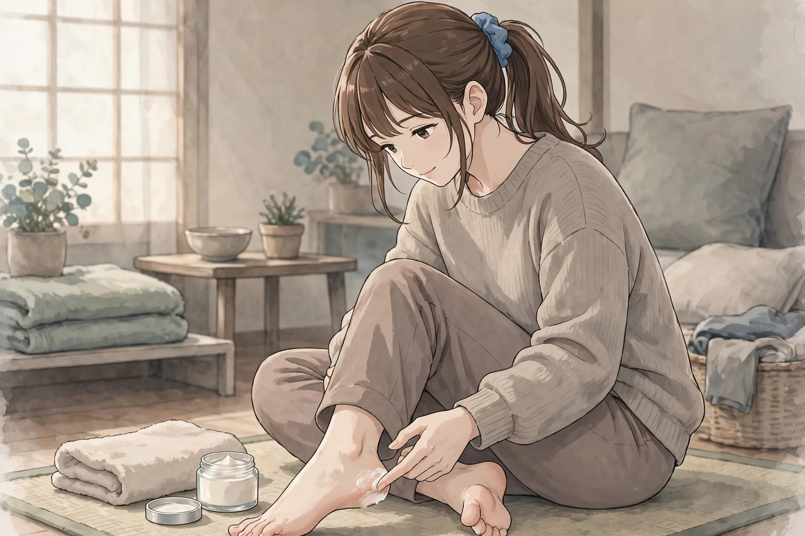

冬の乾燥肌・かかとのガサガサ
女性のお悩みコラム 第2回｜ステラポラリス東三国

暖房の季節の肌を、5つの視点で見つめ直す
「朝起きると肌がつっぱる」「かかとがガサガサして、ストッキングが引っかかる」――11月も半ばを過ぎ、暖房をつける日が増えてきました。冬の乾燥は、顔だけでなく、手先やかかと、すねなど全身に現れます。肌の乾燥は、空気の湿度や皮脂の量、入浴の仕方など、日々の暮らしの積み重ねと深く関わっています。このコラムでは、医学・東洋医学・アロマ・ハーブ・薬膳の5つの視点から冬の乾燥を見つめ、毎日の暮らしに取り入れやすい保湿ケアをご紹介します。
医学の視点：角層とバリアのお話
肌のいちばん外側にある「角層」は、角質細胞と細胞間脂質（セラミドなど）が、れんがとモルタルのように重なってできています。この層が水分の蒸発を防ぎ、外からの刺激から肌を守っています。冬は気温と湿度が下がり、暖房で室内の空気も乾燥するため、角層から水分が逃げやすくなります。さらに、皮脂の分泌は年齢とともに減る傾向があり、熱いお湯での洗いすぎや、ゴシゴシこする洗い方も、皮脂を落としすぎる原因になります。かかとは皮脂腺がほとんどなく、体重を支える負荷と歩行の摩擦で角質が厚くなりやすい場所です。乾燥が進むと角質が硬くなり、ひび割れやすくなります。医学の視点から見た乾燥対策の基本は、「うるおいを逃がさないこと」と「こすりすぎないこと」です。入浴後の保湿や、やさしい洗い方といった小さな積み重ねが土台になります。
東洋医学の視点：肺と肌、血の巡り
東洋医学では、「肺は皮毛を主る（つかさどる）」と言われ、肌のうるおいは肺の働きと深く関わると考えます。乾燥した空気は肺を乾かしやすく、その影響が肌の乾燥にも現れるとされています。また、体を巡る「血」が十分に行き渡らないと、肌のすみずみまで栄養が届きにくくなり、かさつきを感じやすくなるとされています。冬は寒さで体が縮こまり、巡りも滞りがちになる季節です。肌の乾燥のケアで古くから知られるツボに「合谷（ごうこく）」があります。手の甲側、親指と人差し指の骨が合流するあたりのくぼみにあるツボで、手の乾燥や肌荒れのケアに広く使われてきました。反対の手の親指で、痛気持ちいい程度の力でゆっくり押すのが、一般的なセルフケアの方法です。足の乾燥が気になるときは、第1回のコラムでご紹介した「三陰交」を温めるのも、巡りを意識したケアの一つです。
アロマの視点：香りで楽しむ保湿時間
アロマの楽しみは、香りに包まれながら肌をいたわる時間そのものにあります。ラベンダーの精油は、やさしく落ち着いた香りが特徴で、乾燥が気になる季節のスキンケアによく使われます。ゼラニウムの精油は、華やかでバランスのよい香りで、手作りの保湿バームにも向いています。フランキンセンスの精油は、深みのある樹脂の香りで、夜のリラックスタイムに選ばれることが多い精油です。手軽な使い方は、保湿バーム作りです。シアバター大さじ2とホホバオイル小さじ1を湯せんで溶かし、粗熱が取れたら精油を1〜2滴加えてよく混ぜ、清潔な容器に入れて冷まします。手先やかかとなど、乾燥が気になる部分に薄くのばして使います。精油は原液を直接肌につけないこと、初めて使うときは少量で試すこと、妊娠中の方や持病のある方、お薬を使っている方は使用前に専門家へ相談することなど、一般的な注意を守って楽しんでください。
ハーブの視点：温かい一杯を味方に
ハーブティーは、温かい飲み物そのものが体を内側から温めてくれる、暮らしに取り入れやすい方法です。ルイボスティーは、ノンカフェインでミネラルを含むお茶として知られ、就寝前にも飲みやすい一杯です。カモミールティーは、りんごのようなやさしい香りで、夜のリラックスタイムによく選ばれます。ローズヒップティーは、酸味のある赤いお茶で、ビタミンCを含むハーブとして親しまれてきました。目安は1日1〜2杯。食後のくつろぎ時間や、就寝前のリラックスタイムに取り入れると、温かさと一緒に気持ちまでほぐれていく感覚を味わえます。内側からの水分補給も、肌のうるおいを守る土台になります。喉が渇く前に、こまめに水分をとる習慣もあわせて育てていきましょう。
薬膳の視点：潤す食材を食卓へ
薬膳の考え方では、乾燥の季節には体を「潤す」食材を選ぶとされています。代表的なのは、白きくらげ、梨、百合根、山芋、そしてはちみつ、ごま、豆腐などです。白きくらげと梨を煮たスープは、冬の食卓で親しまれてきた組み合わせの一つです。山芋はすりおろしてとろろにしたり、短冊切りにしてサラダにしたりと、手軽に取り入れられます。反対に、辛いもののとりすぎや、アルコールの飲みすぎは、体の水分を失いやすいとされています。冬の食卓では、温かいスープや煮物で潤す食材をたっぷり摂る工夫が向いています。「乾燥が気になる日は、白きくらげと梨のスープにする」「味噌汁に山芋とごまを加える」といった具合に、特別な料理でなくても、いつもの食事に潤す食材を少し足すだけで十分です。
セルフケアのポイント
- 入浴：38〜40度のお湯に10〜15分、週3〜4回は湯船に浸かる日を。熱すぎるお湯や長湯は皮脂を落としすぎるため、ほどほどにしましょう。
- 保湿は入浴後5分以内に：体が温まって水分を含んだタイミングで、クリームやオイルを塗ります。朝と夜の1日2回を目安に。
- かかとの集中ケア：お風呂上がりにクリームをたっぷり塗り、靴下を重ねて寝る「かかとパック」を週2〜3回。朝にはしっとりした感触を味わえます。
- 合谷を押す：1日1〜2回、親指で5秒押して離す動きを5回ほど。手の乾燥が気になる時間帯に行います。
- 室内の湿度：40〜60％を目安に、加湿器や濡れタオルで調整します。暖房の風が直接肌に当たらない工夫も大切です。
- 水分補給：1日1.2〜1.5リットルを目安に、こまめに。温かいハーブティーも水分補給の一つです。
当サロンでのケア
乾燥が気になる季節には、全身の巡りを整えるケアが向いています。当サロンでは、全身をオイルで丁寧にゆるめるアロマオイルマッサージと、姿勢の土台を整える美容整体を組み合わせ、施術のあとに「肌がしっとりした」「脚が軽くなった」と感じやすい状態を目指します。乾燥と関わりの深いお悩みページもあわせてご覧ください。
受診の目安
乾燥の多くは生活習慣や季節によるものですが、中には医療機関への相談が向いている場合もあります。ひび割れから出血する、かゆみが強くて眠れない、赤みや腫れ、水ぶくれがある、乾燥やかゆみが広範囲に広がる、といった場合は早めに皮膚科へご相談ください。市販の保湿剤を使っても長く続くときも、施術の前に医療機関でご相談いただくことをおすすめします。
施術者について
平賀建人（施術歴30年）
鍼灸師・登録販売者・アロマセラピスト・パーソナルトレーナーの資格を持ち、美容整体を中心に、アロマオイルマッサージ、もみほぐしを、その日の状態とご希望に合わせて組み合わせて施術します。このコラムは、施術者の知識と経験をもとに作成しています。
この記事で紹介したケアに使えるもの
PR（アフィリエイト広告を含みます）

皮膚の仕組みをマンガと図解で解説した一冊です。乾燥や肌トラブルの背景を知る手がかりとして、記事の内容とあわせて読めます。

ベビーフット 角質柔軟＆保湿 シアバター フットクリーム 100g
シアバター配合のフットクリームです。記事でご紹介した「かかとパック」の前など、かかとの乾燥が気になる部分の毎日の保湿ケアに。

ルイボスティー オーガニック 有機JAS ノンカフェイン ルイボスティーなごみ ティーバッグ 100包
有機JAS認証のノンカフェインのルイボスティーです。記事でご紹介した温かい一杯の習慣に、就寝前にも飲みやすいティーバッグタイプです。